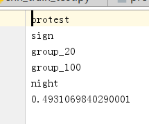

Give details about why is it a valuable topic and then describe the problem you are going to solve in a precise way.
Use matlab to prepare files with correct labels for each image. Name the files as [image_file_name.jpg.txt], this file is used to form ground truth for the images.
The inside of these file should be the labels' name. Violence is a little special here, it's not defined as 0 or 1, so we put the decimal value as it's label.

If there so no label on the image, the content is just 0.
Also, we need a txt file contains all the labels' name.We
Edit get_random_cached_bottlenecks() method: This method creates the ground_truth vectors containing the correct labels of each returned image.
Originally it simply created a vector of zeroes, and then put a 1.0 in a position of the correct label.
For multi-label classification. We need to load all the correct labels for the given image from it's image label file.
First, we need to get a path to the file with correct labels, read all lines equals to labels form file and save them into an array.
Then, we initialize the ground_truth vector with zeroes and indicate the correct labels in the ground_truth vector with 1.0
'violence' is a little special here, we load it's value last in decimal form.
Edit add_final_training_ops(): This method originally added a new softmax and fully-connected layer for training.
The softmax function squashes all values of a vector into a range of [0,1] summing together to 1. But for multi-label case,
we would like our resulting class probabilities to be able to express that an image of a fire and people belongs to people with 90%
probability and to class protest with 50% probability.
So we changed softmax into sigmoid function.
Edit add_evaluation_step(): This method get the indices with the highest values and compare them, while knowing that because
only one label can be correct the ground_truth_tensor contains only 1 in each row.
To adapt this approach to our multi-label case we simply replace the argmax() with round() which turns the probabilities into 0 and 1.
Then we compare the result_tensor with ground_truth_tensor already containing only the 0 and 1: